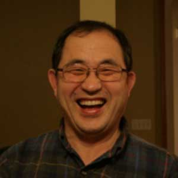

뉴져지 성광교회에 오신 것을 환영합니다
뉴저지 성광 교회는 뉴저지 체리힐 지역에 하나님이 기뻐하시는 교회를 세우고자 2010년 4월 4일(부활주일)에 첫 창립예배를 드림으로 시작이 되었습니다. 교회 이름은 이사야 60:1의 "일어나라 빛을 발하라"라는 말씀과 다니엘 12:3절의 "많은 사람을 옳은데로 돌아오게 한 자는 별과 같이 영원토록 비취리라"는 말씀에 근거 하여 별과 같이 빛나는 교회로 세워지기를 소망하여 "성광 교회"로 이름을 정하였습니다.
성광 교회는 대한 예수교 장로회 총회(예장 계신측) 산하 미주노회(Presbyterian Church of Korea America)에 소속된 교회로 개혁주의 전통 신앙에 입각한 하나님 중심, 말씀 중심, 교회 중심의 신앙생활에 힘쓰고 우리 주님께서 지상 명령으로 주신
- 복음을 전하여 영혼을 구원하는 일, 믿음의 조상 아브라함이 가는 곳 마다 단을 쌓은 것과 같이
- 하나님을 예배하는 삶, 데살로니가 교회와 같이
- 주를 본받는 삶. 모세를 통해 자녀에게 부지런히 가르치라는 말씀대로
- 교육과 일군을 세우는 일을 힘써 실천해 나가고자 합니다

담임목사 정일만